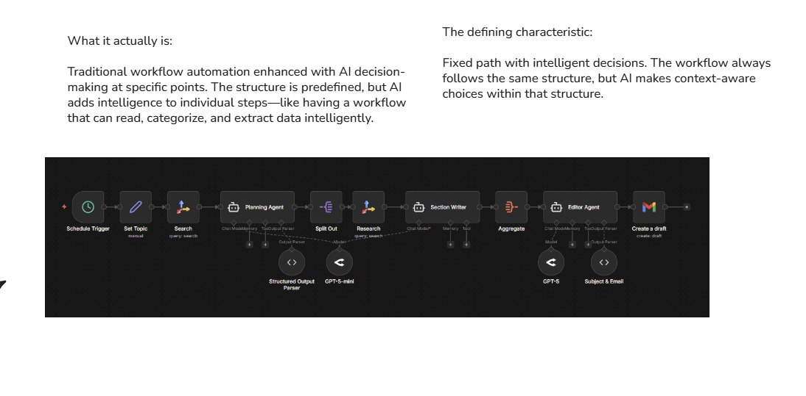

AI Workflows: Conceitos e Arquitetura
Fluxos com ordem fixa e decisoes inteligentes - o equilibrio perfeito entre controle e inteligencia

AI Workflow: Fluxo fixo com decisoes inteligentes em pontos especificos
O que sao AI Workflows?
A camada 3 da piramide de automacao
AI Workflows sao fluxos com ORDEM FIXA de passos, mas que usam IA em pontos especificos para classificar, interpretar ou tomar decisoes. O caminho e previsivel, mas as decisoes sao inteligentes.
A formula do AI Workflow:
"O melhor dos dois mundos: a previsibilidade de um fluxo fixo com a inteligencia da IA onde ela e realmente necessaria."
Workflow vs Agent: A Diferenca Crucial
Entenda quando usar cada um
AI Workflow
- ✓ Caminho fixo - voce define os passos
- ✓ Decisoes inteligentes - IA em pontos especificos
- ✓ Previsivel - voce sabe o que vai acontecer
- ✓ Mais barato - menos tokens consumidos
- ✓ Facil debug - logs claros de cada passo
AI Agent
- • Caminho dinamico - IA decide os passos
- • Autonomia total - IA controla tudo
- • Imprevisivel - resultado pode variar
- • Mais caro - mais tokens e chamadas
- • Debug complexo - dificil rastrear decisoes
Regra de ouro:
Se a ordem das operacoes e fixa e previsivel, use AI Workflow. So use Agent quando a IA realmente precisa decidir qual sera o proximo passo de forma dinamica.
A Estrutura de 4 Etapas
Todo AI Workflow segue este padrao
Entrada (Trigger)
O evento que inicia o workflow: novo email, webhook, formulario, horario agendado.
Passo de IA (Classificacao/Extracao)
A IA analisa o conteudo e toma uma decisao: classifica, extrai dados, ou interpreta o contexto.
Roteamento (Decisao)
Baseado na resposta da IA, o workflow segue caminhos diferentes. Se categoria X, vai para A; se Y, vai para B.
Acao Final
O que acontece no final: criar ticket, enviar email, notificar, atualizar banco de dados.
Quando Usar AI Workflows?
Cenarios ideais para esta camada
✓ Use AI Workflow quando:
- A ordem e previsivel mas precisa de interpretacao de texto
- Precisa classificar ou categorizar conteudo automaticamente
- O processo e repetitivo mas com variacoes de conteudo
- Quer previsibilidade com um toque de inteligencia
✗ NAO use AI Workflow quando:
- A ordem dos passos pode variar dinamicamente
- A IA precisa decidir sozinha o que fazer em seguida
- O processo pode ser resolvido com regras simples (sem IA)
- Voce precisa de conversacao interativa (use Custom GPT)
Exemplos Praticos
Casos de uso reais de AI Workflows
Classificador de Emails de Suporte
Email chega → IA classifica (Urgente, Normal, Spam, Comercial) → Roteia para fila correta → Cria ticket
Qualificacao de Leads
Form submetido → IA analisa perfil → Classifica (Hot, Warm, Cold) → Envia para vendedor ou nurturing
Triagem de Feedbacks
Feedback recebido → IA analisa sentimento e topico → Roteia para equipe responsavel → Notifica
Ferramentas para AI Workflows
As melhores opcoes do mercado
n8n
Open-source, self-hosted, super flexivel
RecomendadoMake
Visual, poderoso, otimo para iniciantes
PopularZapier
Mais integracoes, mais facil, mais caro
EnterpriseDica:
Todas essas ferramentas podem integrar com APIs de LLM (OpenAI, Claude, etc). A escolha depende do seu budget, necessidade de controle e familiaridade tecnica.
Custos e Consideracoes
Planeje seu budget
Custos Envolvidos:
- $ Tokens de IA - pagos por uso (input + output)
- $ Plataforma - mensalidade da ferramenta
- $ Integrações - algumas APIs sao pagas
Como Otimizar:
- ✓ Use modelos menores para tarefas simples
- ✓ Aplique regras primeiro, IA so quando necessario
- ✓ Limite o tamanho do input enviado para a IA
Erros Comuns e Como Evitar
Aprenda com os erros dos outros
Over-engineering
Usar AI Workflow quando automacao simples resolve. Lembre: 50% dos casos nao precisam de IA!
Prompts Vagos
Prompts mal escritos geram classificacoes inconsistentes. Seja especifico, de exemplos, defina claramente as categorias.
Falta de Fallbacks
O que acontece quando a IA nao consegue classificar? Sempre tenha um plano B (ex: escalar para humano).
Ignorar Logs
Sem logs, voce nao sabe o que esta dando errado. Registre inputs, outputs e decisoes para debugging.
Resumo do Modulo
Proximo Passo
Vamos aprender a criar classificacoes inteligentes!